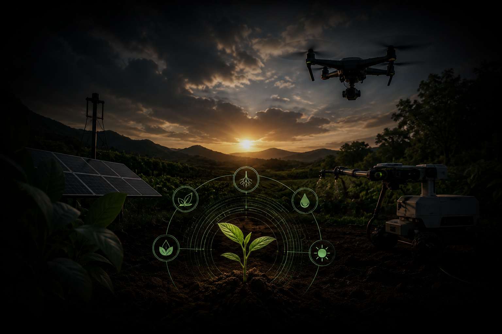

É essencial que a sustentabilidade e a tecnologia andem de mãos dadas na agricultura. Isso entrega benefícios para os produtores, para os consumidores e para os cidadãos e gerações, garantindo saúde, desenvolvimento financeiro e união.

A agricultura sustentável aliada à tecnologia consiste na utilização de recursos tecnológicos para aumentar a produtividade agrícola sem comprometer os recursos naturais necessários para as futuras gerações. Essa união permite que os produtores utilizem água, energia, fertilizantes e defensivos de forma mais eficiente, reduzindo desperdícios e impactos ambientais. Tecnologias como sensores, drones, sistemas de irrigação inteligente e monitoramento remoto ajudam os agricultores a tomar decisões mais precisas, promovendo uma produção mais rentável e ambientalmente responsável.
A tecnologia permite um controle mais eficiente dos recursos naturais utilizados na produção agrícola. Sensores de solo podem medir a umidade e indicar exatamente quando uma área precisa ser irrigada, evitando o desperdício de água. Além disso, drones e imagens de satélite ajudam a monitorar a saúde das plantações, reduzindo a necessidade de aplicações excessivas de produtos químicos. Dessa forma, há menor degradação do solo, preservação dos recursos hídricos e redução da poluição ambiental.
A irrigação inteligente utiliza sensores e sistemas automatizados para fornecer água às plantas apenas quando necessário. Isso reduz significativamente o desperdício hídrico, um dos maiores desafios da agricultura moderna. Além da economia de água, o sistema diminui os custos operacionais, melhora o desenvolvimento das culturas e reduz o consumo de energia utilizado no bombeamento. Como resultado, a produção torna-se mais sustentável e economicamente viável.
Os drones são ferramentas capazes de sobrevoar grandes áreas agrícolas e coletar informações detalhadas sobre as plantações. Eles identificam falhas no cultivo, áreas com pragas, doenças ou deficiência nutricional. Com essas informações, o produtor pode realizar intervenções apenas nos locais necessários, evitando o uso excessivo de fertilizantes e defensivos agrícolas. Isso reduz os custos de produção e os impactos ambientais, tornando a agricultura mais eficiente e sustentável.
Os sensores de solo coletam dados sobre umidade, temperatura, nutrientes e outras características importantes para o desenvolvimento das culturas. Com essas informações em tempo real, o agricultor consegue ajustar a irrigação, a adubação e outros manejos de forma precisa. Isso favorece o crescimento saudável das plantas, reduz desperdícios de insumos e aumenta a produtividade. Além disso, contribui para a conservação do solo e dos recursos naturais.
O monitoramento remoto permite acompanhar as condições da propriedade agrícola à distância por meio de aplicativos, sensores e sistemas conectados à internet. O produtor pode verificar informações sobre irrigação, clima, saúde das plantas e funcionamento de equipamentos em tempo real. Isso possibilita respostas rápidas a problemas, reduz perdas na produção e melhora a eficiência operacional. Como consequência, há maior sustentabilidade e melhor aproveitamento dos recursos disponíveis.
Por meio da agricultura de precisão, tecnologias como drones, sensores e softwares de análise identificam exatamente onde há infestação de pragas ou doenças. Assim, os defensivos podem ser aplicados apenas nas áreas afetadas, em vez de serem distribuídos por toda a lavoura. Essa prática reduz significativamente a quantidade de produtos químicos utilizados, diminuindo os impactos ambientais, os riscos à saúde humana e os custos de produção.
Embora algumas tecnologias exijam investimento inicial, seus benefícios econômicos costumam compensar rapidamente os custos. A redução do desperdício de água, energia e insumos gera economia significativa para os produtores. Além disso, o aumento da produtividade e da qualidade dos produtos agrícolas contribui para maiores lucros. Dessa forma, a tecnologia sustentável promove um crescimento econômico mais equilibrado e duradouro para o setor agrícola.
A energia solar pode ser utilizada para alimentar sistemas de irrigação, sensores, estufas, bombas d'água e outras estruturas agrícolas. Por ser uma fonte renovável e limpa, reduz a dependência de combustíveis fósseis e diminui a emissão de gases poluentes. Além disso, contribui para a redução dos custos com eletricidade ao longo do tempo, tornando a produção mais sustentável e economicamente vantajosa.
A agricultura de precisão é uma abordagem que utiliza tecnologias digitais para analisar e gerenciar variáveis dentro da propriedade rural. Com auxílio de GPS, sensores, drones e softwares especializados, o produtor consegue aplicar insumos na quantidade exata e no local correto. Os principais benefícios incluem aumento da produtividade, redução dos custos operacionais, menor impacto ambiental e melhor utilização dos recursos naturais.
A tecnologia contribui para a redução das emissões de gases de efeito estufa por meio da otimização do uso de máquinas, fertilizantes e recursos energéticos. Além disso, sistemas de monitoramento climático permitem prever eventos extremos, possibilitando que os agricultores adotem medidas preventivas. O uso eficiente dos recursos também reduz o desmatamento e a degradação ambiental, colaborando para a mitigação dos impactos das mudanças climáticas.
A automação agrícola permite que diversas atividades sejam realizadas de forma automática, como irrigação, monitoramento de culturas e controle de equipamentos. Isso aumenta a eficiência operacional, reduz erros humanos e otimiza o uso de recursos. Como consequência, há menor desperdício de água, energia e insumos, além de aumento da produtividade e redução dos impactos ambientais associados à produção agrícola.
Com o uso de sensores, softwares de gestão e sistemas de monitoramento, os agricultores conseguem acompanhar de perto o desenvolvimento das culturas. Isso possibilita corrigir problemas rapidamente e garantir melhores condições para o crescimento das plantas. Como resultado, os alimentos produzidos apresentam maior qualidade, uniformidade e segurança alimentar, beneficiando tanto os produtores quanto os consumidores.
A sustentabilidade agrícola busca garantir que os recursos naturais continuem disponíveis para as próximas gerações, permitindo a produção contínua de alimentos. Quando associada à tecnologia, torna-se possível aumentar a produtividade sem degradar o meio ambiente. Isso contribui diretamente para a segurança alimentar, pois assegura uma oferta estável de alimentos de qualidade para uma população mundial em constante crescimento.
A combinação entre tecnologia e sustentabilidade é vista como o futuro da agricultura porque oferece soluções para os principais desafios do setor: aumento da demanda por alimentos, escassez de recursos naturais e mudanças climáticas. Tecnologias inovadoras permitem produzir mais utilizando menos água, energia e insumos, reduzindo impactos ambientais e aumentando a rentabilidade. Dessa forma, é possível construir um modelo agrícola capaz de atender às necessidades atuais sem comprometer a capacidade produtiva das futuras gerações.
Calculadora de Economia
Tecnologias sustentáveis ajudam produtores a economizar recursos, aumentar a produtividade e reduzir impactos ambientais. Com esta calculadora, você pode simular esses benefícios e entender como a inovação pode contribuir para uma agricultura mais eficiente e preparada para o futuro.